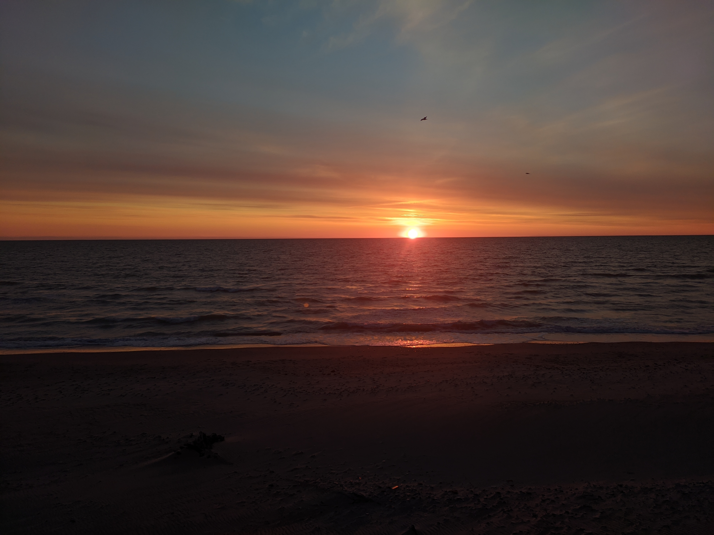

Commuting Conundrum
As a young professional, I couldn't afford a car, but I was tired of spending hours each week on public transportation. Cycling to work seemed like a great solution, but I quickly discovered that fighting headwinds on my way home was both exhausting and time-consuming. That's when I started to consider investing in an electric bike.
But then I discovered the world of ebikes. Investing in an ebike was a game-changer for me. Suddenly, my daily commute became a joy rather than a chore. With the assistance of the electric motor, I could easily tackle even the toughest headwinds without feeling exhausted. Plus, I was able to travel further than ever before without feeling like I needed to stop for a break.
Not only did my new ebike make my daily commute more enjoyable, but it also gave me a sense of freedom and independence that I had never experienced before. I was no longer reliant on public transportation or friends for rides - I could go wherever I wanted, whenever I wanted.
One of the things I love most about my ebike is the ability to explore new parts of my city. Before, I was limited to a relatively small radius around my apartment, but now I can easily venture to neighborhoods that would have taken me hours to reach on foot or by public transportation. I've discovered new cafes, parks, and shops that I never knew existed, and I've even started taking longer weekend trips to nearby towns and nature reserves.
To New Adventures
 As the sun slowly set over the horizon, I couldn't help but feel grateful for the beauty of the world around us. This stunning sunset reminded me of all the adventures that lie ahead, just waiting to be discovered. Whether it's exploring new places, meeting new people, or trying new things, there's always something exciting to look forward to.Capturing this moment in time with my camera was a reminder to cherish the present and to embrace every opportunity that comes my way. As I gaze at this photo, I'm filled with a sense of wonder and curiosity about the world, and I can't wait to see where my next adventure will take me.
So here's to more sunsets like this, and to all the adventures that lie ahead! May we always remember to appreciate the beauty around us and to seize every opportunity that comes our way.